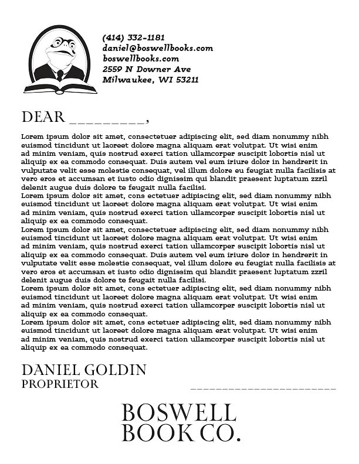
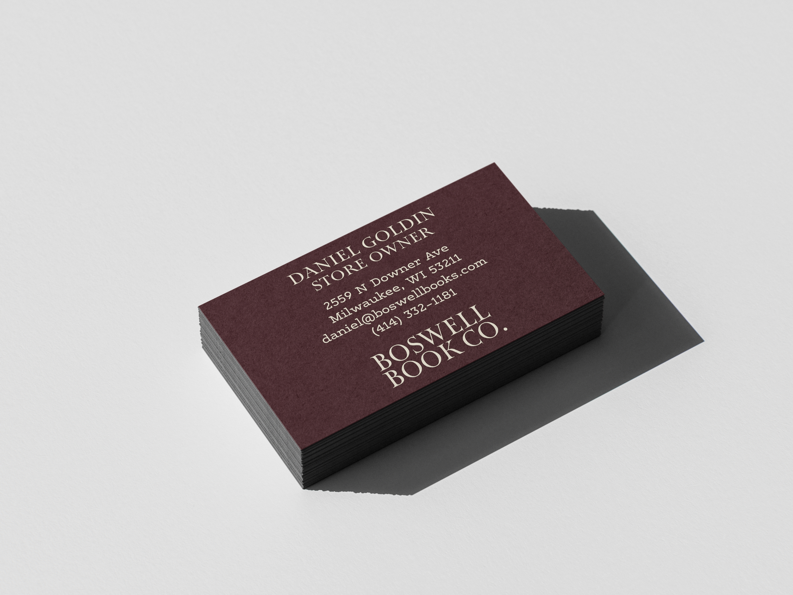
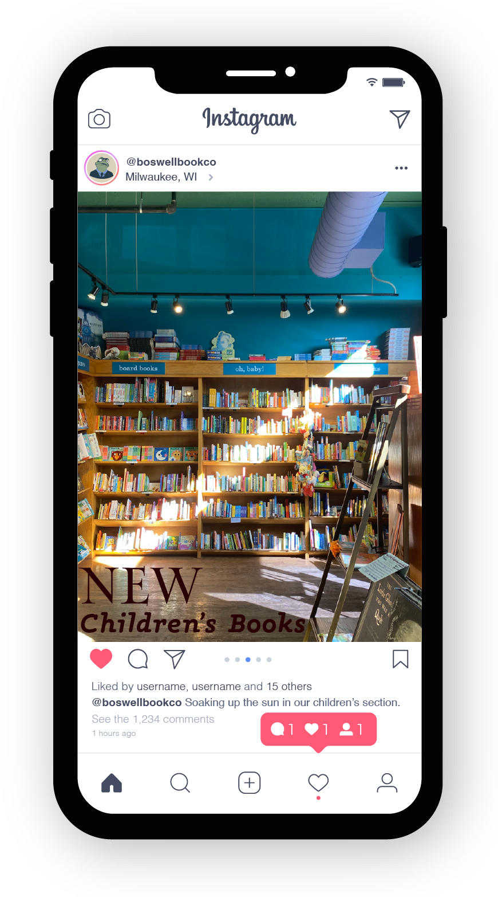
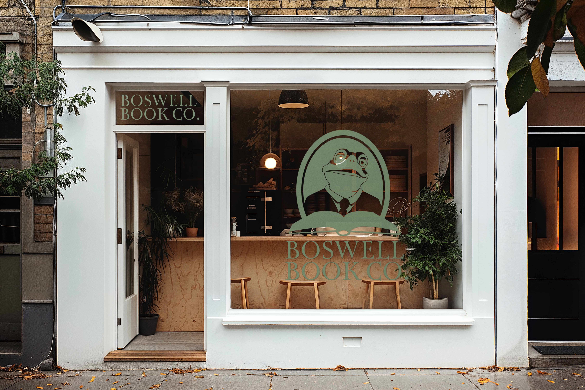

The following mockups are examples of how the new branding elements can be used together to create promotional imagery

The following mockups are examples of how the new branding elements can be used together to create promotional imagery
The letterhead mockup shows typography in use. Map Roman Variable is used n the greeting and closing to draw attention to these areas, where the recipient and sender names are. The contact information uses Maxular, bold and italicized, so as to seperate this information from the body copy visually.


This buisiness card mockup shows the typography and color scheme in use. The typeface for the name and job position is Map Roman Variable, and the typeface for the contact information is Maxular. The beige text on a dark red background creates an eye-catching contrast.
The social media mockup shows the photography style and type in use. Photos should be casual and and candid, not overly staged or "clean". They should showcase warm, inviting colors and light. The typography is used to create hierarchy in the information given.


The store mockup shows what the logo would look like on a store front. This utilizes the word and brand mark sepetrated, in the inverse variation